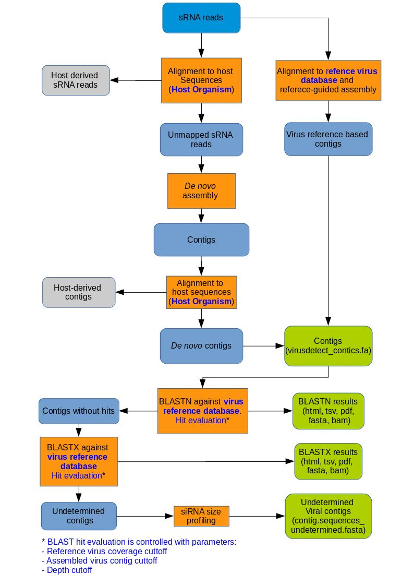

VirusDetect
Description
This tool runs the VirusDetect pipeline (please find a flowchart below), that performs virus identification using small RNA (sRNA) sequencing data.
Given a FASTQ file, it performs de novo assembly and reference-guided assembly by aligning sRNA reads to the reference database of known viruses. The assembled contigs are
compared to the reference virus sequences for virus identification first using BLASTN and then BLASTX. Virus assignments are selected based on the three cutoff parameters described below.
More detailed description of the VirusDetect pipeline is available at the home page of VirusDetect.
Input data
Input data (reads) should be given as a FASTQ formatted sequence file. If several FASTQ files are provided,
a separate VirusDetect analysis will be done for each file.
Parameters
- Reference virus database: VirusDetect is mainly used for detecting plant viruses, but you can use it for other viruses too. Use this parameter to select a virus reference database
matching your sample type.
- Host Organism: If possible, the reads should be cleaned from sequences originating from the host genome. This can be done by mapping the reads to the host genome
and selecting only those reads that do not match. Also the resulting contigs are aligned to the host genome and the matching ones are removed.
- Select the host genome from the drop-down menu listing the organisms for which Chipster has a pre-calculated genome index. If your host genome is not available you should set this parameter to none.
- If the host genome is not available in Chipster but you have it as a fasta formatted sequence file, you should use the tool VirusDetect with own genome.
- Reference virus coverage cutoff: At least this proportion of the contig has to match to the reference in order to consider the match significant for the virus assignment.
For example the default value 0.75 means that only contigs that match to a reference virus for more than 75% of their length are considered as significant matches.
- Assembled virus contig cutoff: The virus assignment is reported only if more than the given proportion of the reference genome is
covered with significant matches to the generated contigs (e.g. the default value of 0.1 means that at least 10 % of the reference virus sequence must match to the contigs generated by VirusDetect).
- Depth cutoff: The average number of times each nucleotide of the reference sequence must be covered by reads in the sample.
- Use input names in output file names: The names of the VirusDetect result files will start with the name of the input file.
- Return results in one archive file: All the output files are stored in a single tar file. This feature is useful if you run VirusDetect on several samples at the same time.
The result files can be extracted from the tar package using the tool Extract .tar.gz file.
Output
VirusDetect produces a large number of result files. Output related options are used to select, what data is returned. By default VirusDetect returns the following files:
- blastn_matching_references.html Table listing reference viruses that have corresponding virus contigs identified by BLASTN. A pdf formatted report file is returned for each match.
- blastx_matching_references.html Table listing reference viruses that have corresponding virus contigs identified by BLASTX. A pdf formatted report file is returned for each match.
- blastn_matches.tsv Table of BLASTN matches to the reference virus database.
- blastx_matches.tsv Table of BLASTX matches to the reference virus database.
- virusdetect_matches_blastn.fa Sequences of contigs that match to virus references by BLASTN.
- virusdetect_matches_blastx.fa Sequences of contigs that match to virus references by BLASTX.
- undetermined.html Table listing the length, siRNA size distribution and 21-22nt percentage of undetermined contigs. Potential virus contigs (21-22 nt > 50%) are indicated in green.
- undetermined_blast.html Table listing contigs having hits in the virus reference database but not assigned to any reference viruses because they did not meet the coverage or depth criteria.
- contig_sequences.undetermined.fa Sequences of contigs that do not match to virus references.
- virusdetect_contigs.fa Sequences of non-redundant contigs derived through reference-guided and de novo assemblies.
If the parameter Return matching reference sequences is turned on, also the following files are returned
- blastn_matching_references.fa and .fai. Virus reference sequences that produced hits for BLASTN search with the potential virus contigs.
- blastx_matching_references.fa and .fai. Virus reference sequences that produced hits for BLASTX search with the potential virus contigs.
If the parameter Return BAM formatted alignments is turned on, also the following files are returned
- blastn_matches.bam and .bai. BAM file containing the BLASTN alignment of each contig to its corresponding virus reference sequences.
- blastx_matches.bam and .bai. BAM file containing the BLASTX alignment of each contig to its corresponding virus reference sequences.
Note: If you select the blastn_matching_references.fa and blastn_matches.bam, you can use the Chipster Genome Browser to visualize the BLAST results.
In the Genome Browser the blastn_matching_references.fa is used as the genome and each reference virus sequence is listed in the Chromosome pull down menu.

Figure 1.Flowchart of the VirusDetect pipeline. Green boxes indicate the output files.
Steps where the parameters are used are indicated with blue letters.